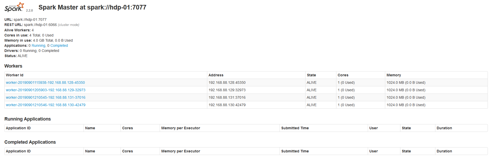
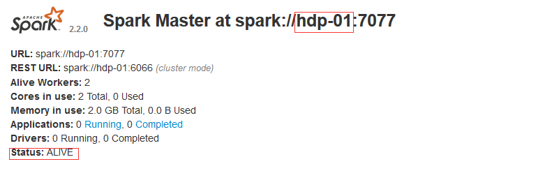
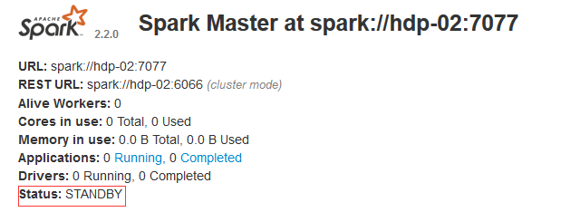
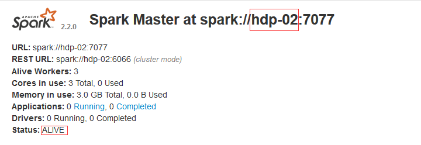
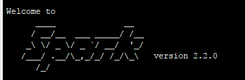
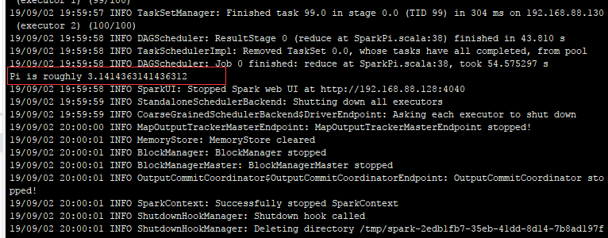

原文连接:https://www.cnblogs.com/renxixao/p/11452590.html
Spark简介

Apache Spark™是用于大规模数据处理的统一分析引擎。
从右侧最后一条新闻看，Spark也用于AI人工智能 spark是一个实现快速通用的集群计算平台。它是由加州大学伯克利分校AMP实验室 开发的通用内存并行计算框架，用来构建大型的、低延迟的数据分析应用程序。它扩展了广泛使用的MapReduce计算 模型。高效的支撑更多计算模式，包括交互式查询和流处理。spark的一个主要特点是能够在内存中进行计算，及时依赖磁盘进行复杂的运算，Spark依然比MapReduce更加高效。
为什么要学Spark
中间结果输出：基于MapReduce的计算引擎通常会将中间结果输出到磁盘上，进行存储和容错。出于任务管道承接的，考虑，当一些查询翻译到MapReduce任务时，往往会产生多个Stage，而这些串联的Stage又依赖于底层文件系统（如HDFS）来存储每一个Stage的输出结果。 Spark是MapReduce的替代方案，而且兼容HDFS、Hive，可融入Hadoop的生态系统，以弥补MapReduce的不足。
Spark的四大特性
高效性
运行速度提高100倍。 Apache Spark使用最先进的DAG调度程序，查询优化程序和物理执行引擎，实现批量和流式数据的高性能。
易用性
Spark支持Java、Python和Scala的API，还支持超过80种高级算法，使用户可以快速构建不同的应用。而且Spark支持交互式的Python和Scala的shell，可以非常方便地在这些shell中使用Spark集群来验证解决问题的方法。
通用性
Spark提供了统一的解决方案。Spark可以用于批处理、交互式查询（Spark SQL）、实时流处理（Spark Streaming）、机器学习（Spark MLlib）和图计算（GraphX）。这些不同类型的处理都可以在同一个应用中无缝使用。Spark统一的解决方案非常具有吸引力，毕竟任何公司都想用统一的平台去处理遇到的问题，减少开发和维护的人力成本和部署平台的物力成本。
兼容性Spark可以非常方便地与其他的开源产品进行融合。比如，Spark可以使用Hadoop的YARN和Apache Mesos作为它的资源管理和调度器，器，并且可以处理所有Hadoop支持的数据，包括HDFS、HBase和Cassandra等。这对于已经部署Hadoop集群的用户特别重要，因为不需要做任何数据迁移就可以使用Spark的强大处理能力。Spark也可以不依赖于第三方的资源管理和调度器，它实现了Standalone作为其内置的资源管理和调度框架，这样进一步降低了Spark的使用门槛，使得所有人都可以非常容易地部署和使用Spark。此外，Spark还提供了在EC2上部署Standalone的Spark集群的工具。
Mesos：Spark可以运行在Mesos里面（Mesos 类似于yarn的一个资源调度框架） standalone：Spark自己可以给自己分配资源（master，worker） YARN：Spark可以运行在yarn上面 Kubernetes：Spark接收 Kubernetes的资源调度
Spark的组成
Spark组成(BDAS)：全称伯克利数据分析栈，通过大规模集成算法、机器、人之间展现大数据应用的一个平台。也是处理大数据、云计算、通信的技术解决方案。
它的主要组件有：
SparkCore：将分布式数据抽象为弹性分布式数据集（RDD），实现了应用任务调度、RPC、序列化和压缩，并为运行在其上的上层组件提供API。
SparkSQL：Spark Sql 是Spark来操作结构化数据的程序包，可以让我使用SQL语句的方式来查询数据，Spark支持 多种数据源，包含Hive表，parquest以及JSON等内容。
SparkStreaming： 是Spark提供的实时数据进行流式计算的组件。
MLlib：提供常用机器学习算法的实现库。
GraphX：提供一个分布式图计算框架，能高效进行图计算。
BlinkDB：用于在海量数据上进行交互式SQL的近似查询引擎。
Tachyon：以内存为中心高容错的的分布式文件系统。
应用场景
Yahoo将Spark用在Audience Expansion中的应用，进行点击预测和即席查询等 淘宝技术团队使用了Spark来解决多次迭代的机器学习算法、高计算复杂度的算法等。应用于内容推荐、社区发现等 腾讯大数据精准推荐借助Spark快速迭代的优势，实现了在“数据实时采集、算法实时训练、系统实时预测”的全流程实时并行高维算法，最终成功应用于广点通pCTR投放系统上。 优酷土豆将Spark应用于视频推荐(图计算)、广告业务，主要实现机器学习、图计算等迭代计算。
spark安装
上传spark-安装包到Linux上
[root@hdp-01 ~]# wget https://d3kbcqa49mib13.cloudfront.net/spark-2.2.0-bin-hadoop2.7.tgz
[root@hdp-01 ~]# tar -zxvf spark-2.2.0-bin-hadoop2.7.tgz -C apps/
[root@hdp-01 apps]# mv spark-2.2.0-bin-hadoop2.7 spark
进入conf目录并重命名并修改spark-env.sh.template文件
[root@hdp-01 conf]# mv spark-env.sh.template spark-env.sh
[root@hdp-01 conf]# vi spark-env.sh
在该配置文件中添加如下配置
export JAVA_HOME=/root/apps/java
export SPARK_MASTER_IP=hdp-01
export SPARK_MASTER_PORT=7077
重命名并修改slaves.template文件
[root@hdp-01 conf]# mv slaves.template slaves
[root@hdp-01 conf]# vi slaves
在该文件中添加子节点所在的位置（Worker节点）
hdp-02
hdp-03
hdp-04
将配置好的Spark拷贝到其他节点上
[root@hdp-01 apps]# scp -r spark/ hdp-02:$PWD
[root@hdp-01 apps]# scp -r spark/ hdp-03:$PWD
[root@hdp-01 apps]# scp -r spark/ hdp-04:$PWD
Spark集群配置完毕，目前是1个Master，3个Work，在hdp-01上启动Spark集群
[root@hdp-01 spark]# sbin/start-all.sh启动后执行jps命令，主节点上有Master进程，其他子节点上有Work进程，登录Spark管理界面查看集群状态（主节点）： http://hdp-01:8080/

到此为止，Spark集群安装完毕，但是有一个很大的问题，那就是Master节点存在单点故障，要解决此问题，就要借助zookeeper，并且启动至少两个Master节点来实现高可靠
配置Spark集群之前一定要把zookper集群启动
Spark集群规划：hdp-01，hdp-02是Master；hdp-03，hdp-04是Worker 安装配置zk集群，并启动zk集群 停止spark所有服务
集群中Master地址是不固定的 所以必须把export SPARK_MASTER_IP=hdp-01 注释掉
[root@hdp-01 sbin]# ./stop-all.sh
[root@hdp-01 conf]# vi spark-env.sh
export JAVA_HOME=/root/apps/java
#export SPARK_MASTER_IP=hdp-01
export SPARK_MASTER_PORT=7077
export SPARK_DAEMON_JAVA_OPTS="-Dspark.deploy.recoveryMode=ZOOKEEPER
-Dspark.deploy.zookeeper.url=hdp-01:2181,hdp-02:2181,hdp-03:2181 -Dspark.deploy.zookeeper.dir=/spark"
[root@hdp-01 conf]#scp -r spark-env.sh/ hdp-02:$PWD
[root@hdp-01 conf]#scp -r spark-env.sh/ hdp-03:$PWD
[root@hdp-01 conf]#scp -r spark-env.sh/ hdp-04:$PWD
[root@hdp-01 sbin]# ./start-all.sh
// 启动hdp-02上的master，如果hdp-01宕机 hdp-02会有worker变为master
[root@hdp-02 spark]# sbin/start-master.sh
测试集群部署
打开浏览器 输入 http://hdp-01:8080/ http://hdp-02:8080/


standby:备用状态
现在停掉hdp-01上的Master
[root@hdp-01 sbin]# jps
35473 Master
1682 NameNode
15109 NodeManager
35575 Jps
2200 SecondaryNameNode
14984 ResourceManager
14636 QuorumPeerMain
1839 DataNode
[root@hdp-01 sbin]# kill -9 35473
hdp-02接替hdp-01工作 从Master变为Worker 如果现在再启动 hdp-01 hdp-01为从节点 不会变为主节点
如果hdp-02发生故障后 hdp-01就会自动变成Master
Spark Shell
spark-shell是Spark自带的交互式Shell程序，方便用户进行交互式编程，用户可以在该命令行下用scala编写spark程序。
启动spark shell
[root@hdp-01 spark]# bin/spark-shell --master spark:/hdp-01:7077 --executor-memory 1g --total-executor-cores 1

出现此logo证明spark shell 启动成功
集群模式下启动spark shell
[root@hdp-01 spark]# bin/spark-shell --master spark://hdp-01:7077,hdp-04:7077
注意： 如果启动spark shell时没有指定master地址，但是也可以正常启动spark shell和执行spark shell中的程序，其实是启动了spark的local模式，该模式仅在本机启动一个进程，没有与集群建立联系。 Spark Shell中已经默认将SparkContext类初始化为对象sc。用户代码如果需要用到，则直接应用sc即可
Spark控制台有一个Running Applications 也就是刚刚启动的spark shell
执行Spark程序
Spark程序求圆周率
[root@hdp-01 spark]# bin/spark-submit --master spark://hdp-01:7077 --class org.apache.spark.examples.SparkPi --executor-memory 1G --total-executor-cores 1 examples/jars/spark-examples_2.11-2.2.0.jar 100
[root@hdp-01 spark]# bin/spark-submit --class org.apache.spark.examples.SparkPi --master spark://hdp-01:7077 examples/jars/spark-examples_2.11-2.2.0.jar 100
参数说明： --master spark://hdp-01:7077 指定Master的地址 --executor-memory 1G 指定每个worker可用内存为1G --total-executor-cores 1 指定整个集群使用的cup核数为1
集群模式执行spark程序
[root@hdp-01 spark]# bin/spark-submit --class org.apache.spark.examples.SparkPi --master spark://hdp-01:7077,hdp-04:7077 --executor-memory 1G --total-executor-cores 2 examples/jars/spark-examples_2.11-2.2.0.jar 100
spark shell中编写WordCount程序
启动hdfs 上传单词文件到hdfs中
[root@hdp-01 ~]# start-all.sh
[root@hdp-01 ~]# vi spark.txt
helo java
hello spark
hello hdfs
hello yarn
yarn hdfs
[root@hdp-01 ~]# hadoop fs -mkdir -p /spark
[root@hdp-01 ~]# hadoop fs -put spark.txt /sparkspark shell 执行任务
scala> sc.textFile("hdfs://hdp-01:9000/spark").flatMap(_.split(" ")).map((_,1)).reduceByKey(_+_).collect
res0: Array[(String, Int)] = Array(("",4), (hello,4), (java,1), (yarn,2), (spark,1), (hdfs,2))这样就统计出每个单词的数量以key-value的形式在控制台显示 以下将结果输出到hdfs中
scala> sc.textFile("hdfs://hdp-01:9000/spark").flatMap(.split(" ")).map((,1)).reduceByKey(+).saveAsTextFile("hdfs://hdp-01:9000/outText")